Kurz gesagt
Verglichen mit OBS Studio 33.0.0, seinen Einstellungen und seinem Quellcode.
| qBlank | OBS Studio | |
|---|---|---|
| Gemacht für | Auf einer Quelle spielen und sie aufnehmen | Szenen zum Streamen und Aufnehmen |
| Quellen | Karte, Bildschirm oder Fenster, eine zur Zeit | Beliebig viele, in Szenen geschichtet |
| Wann ein Bild erscheint | Sobald es ankommt | Beim nächsten Takt der Leinwand |
| Bildrate | Die der Quelle | Eine Rate für die ganze Leinwand |
| Ton der Karte | Eigener Puffer, ab Werk 30 ms | Monitoring, ans Video angeglichen |
| Deinterlacing | Läuft, wenn das Bild als interlaced gemessen wird | Pro Quelle von Hand gewählt |
| Videonorm | Automatisch gefunden | Im Treiberdialog der Karte |
| Composite-Dot-Crawl | Filter eingebaut | – |
| Ältere Spiele im exklusiven Vollbild | – | Spielaufnahme |
| Replay-Puffer | Arbeitsspeicher oder Platte, bis 30 Minuten | Arbeitsspeicher |
| Streamen | – | Ja |
| Systeme | Windows 10 und 11, 64 Bit | Windows, macOS, Linux |
| Download | Eine Datei, etwa 3 MB; ffmpeg zum Aufnehmen bei Bedarf | Installer, 187 MB |
| Lizenz | GPLv3 | GPLv2 oder neuer |
Capture Card: Timing
OBS: eine Leinwand, ein Takt
- In jedem Takt aktualisiert OBS die Quellen, gibt das Bild an die Encoder, zeichnet die Vorschau und schläft dann bis zum nächsten Takt.
- Ein Bild der Karte wird beim nächsten Takt abgeholt. Kommt es knapp danach, wartet es fast ein ganzes Intervall: bis 16,7 ms bei 60 fps.
- Die Rate gilt für die ganze Leinwand, unter Einstellungen → Video. Eine 50-Hz-Konsole auf 60 fps zeigt jedes fünfte Bild doppelt. Eine 60-Hz-Konsole auf 50 fps verliert jedes sechste.
- Vorschau und Projektoren laufen mit VSync: jedes Bild wartet auf den Refresh des Monitors.
- Pufferung eines Videoaufnahmegeräts steht auf Automatisch erkennen. OBS' eigener Tooltip nennt Deaktivieren ideal zum Spielen einer Konsole. Dann bleibt nur das neueste Bild.
- Zum Spielen im Vollbild hat OBS Projektoren: Quellenprojektor öffnen auf einem Monitor oder im Fenster, Fenster an Inhalt anpassen fürs Fenster.
qBlank: keine Leinwand
- Jedes Bild wird gezeichnet, wenn es ankommt, in der Rate der Quelle. Eine 50-Hz-Konsole läuft mit 50, eine 60-Hz-Konsole mit 60, ohne Umstellen.
- Die Bildrate der Karte folgt der Videonorm. Rate des Signals nimmt 50 Hz bei PAL, 59,94 bei NTSC, 60 bei PAL 60.
- Ein Dreifachpuffer: ein noch nicht gezeichnetes Bild wird vom nächsten ersetzt, nie dahinter eingereiht.
- Ein Bild Warteschlange in der Swapchain, Tearing erlaubt, VSync ab Werk aus. Anzeige → VSync schaltet es ein.
- Das Fenster selbst ist der Player: Enter Vollbild, Strg+Enter rahmenlos.
F1 zeigt, was qBlank selbst beiträgt: Durchlauf ist die Zeit von der Ankunft eines Bildes in qBlank, bis es qBlank verlässt. Etwa 1 ms bei 1080p60. Karte und Monitor kommen noch dazu.
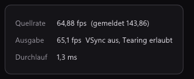
Capture Card: Ton
OBS
- Ein Videoaufnahmegerät startet auf Nur Audio aufnehmen. Zu hören ist die Konsole erst, wenn man in den Erweiterten Audioeigenschaften das Audiomonitoring einschaltet.
- Monitoring aus, Nur Monitoring an (keine Ausgabe) oder Monitoring aktiviert. Das Monitoring spielt über den gemeinsamen Windows-Mixer und wartet, bis der Ton zu den Zeitstempeln des Videos passt.
- OBS vergrößert seinen Audiopuffer, wenn Quellen auseinanderlaufen, bis etwa 960 ms. Audiopufferung mit niedriger Latenz hält ihn bei 20 ms. OBS meint das für Decklink und NDI und warnt vor Aussetzern.
- Nutzer im OBS-Forum berichten, dass das Monitoring etwa eine Zehntelsekunde hinter dem Bild liegt.
- Desktop-Audio ausgeben (DirectSound) oder (WaveOut) spielt die Karte stattdessen direkt über Windows, am Monitoring vorbei.
qBlank
- Der Ton der Karte spielt von Anfang an, über qBlanks eigenen Puffer: Tonpuffer von 5 bis 200 ms, ab Werk 30.
- Exclusive Mode umgeht den Windows-Mixer für weniger Verzögerung. Das Gerät ist dann für andere Programme gesperrt.
- A/V-Versatz verschiebt Ton oder Bild um bis zu 200 ms, für einen Fernseher oder ein Headset mit eigener Verzögerung.
- M schaltet stumm, + und - regeln die Lautstärke. Beides lässt die Aufnahme in Ruhe.
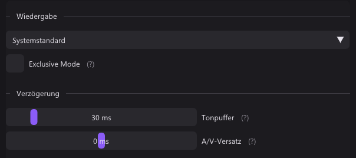
Analoge Konsolen
| qBlank | OBS Studio | |
|---|---|---|
| Videonorm | PAL, NTSC oder SECAM automatisch gefunden, folgt einem Wechsel zwischen 50 und 60 Hz | Im Treiberdialog hinter Video konfigurieren |
| Deinterlacing | Nur bei einem als interlaced gemessenen Bild | Ein Modus pro Quelle, immer an |
| Modi | Aus (Weave), Bob, Bob (interpoliert), Bewegungsadaptiv, Kantenorientiert, YADIF | Verwerfen, Retro, Blend, Blend 2x, Linear, Linear 2x, Yadif, Yadif 2x |
| Halbbildreihenfolge | Automatisch, oder von Hand | Oberes Feld zuerst oder Unteres Feld zuerst |
| Farbbereich | Aus dem Bild gemessen | Standard, Begrenzt oder Voll, von Hand |
| Composite-Dot-Crawl | Fünf Filter, nebeneinander zu vergleichen | – |
| Pixelgrafik | Natives Pixelraster, Sharp Bilinear, Integer-Skalierung | Point-Skalierung |
| Zeilenlücken, Röhrenmaske | Eingebaut, nur für die Anzeige | Shader-Plugins von anderen |
Videonorm
Eine Karte auf NTSC zeigt eine PAL-Konsole schwarzweiß oder mit wandernden Farben. In OBS öffnet man den Treiberdialog und stellt um. qBlank probiert die Normen selbst durch, bis die Farbe einrastet. F7 prüft am aktuellen Bild noch einmal.
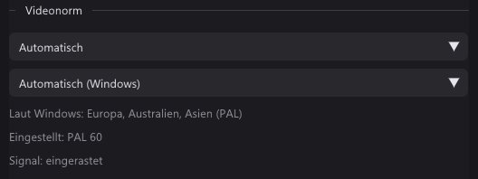
Deinterlacing
Viele Konsolen schicken 240p und 480i über dasselbe Signal: ein Spiel, oft schon sein Menü, wechselt zwischen beiden. OBS behält seinen Modus, bis man ihn ändert. Ein fester Modus behandelt auch 240p als interlaced und kostet dort Schärfe oder Bewegung.
qBlank misst jedes Bild. Mit Nur bei interlaced Quellen anwenden darf der Deinterlacer anbleiben: 240p geht unberührt durch, 480i und 576i werden deinterlaced. Auch die Halbbildreihenfolge wird gemessen.
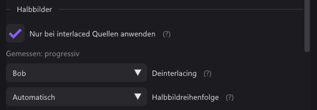
Farbbereich
Ein falscher Bereich zeigt sich als graues Schwarz oder abgesoffene Schatten. OBS stellt ihn pro Quelle von Hand ein. qBlank misst ihn aus dem Bild; F6 misst neu.
Composite
Composite trägt die Farbe in der Helligkeit, das hinterlässt wandernde Punkte an Kanten. qBlank hat fünf Filter dagegen; sie erscheinen nur an einem Composite-Eingang. F12 teilt das Bild in aus und an, F11 hält es an. OBS hat dafür nichts eingebaut.
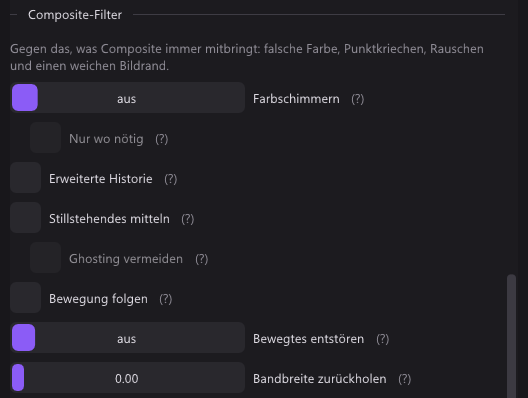
Pixelgrafik und Skalierung
- OBS: Skalierungsfilterung mit Point, Bilinear, Bicubic, Lanczos und Area. Point hält Pixel scharf, aber ungleich breit, wenn der Faktor nicht ganzzahlig ist.
- qBlank: Nearest Neighbor, Bilinear, Bicubic, Lanczos3 und Sharp Bilinear, das Pixel bei jedem Faktor scharf und gleich breit hält. Integer-Skalierung steht beim Seitenverhältnis.
- qBlank hat außerdem Natives Pixelraster: man wählt, wie viele Pixel die Konsole pro Zeile zeichnet, 256 bei einem SNES. Jedes Konsolenpixel wird dann ein scharfer Block.
- Zeilenlücken und eine Röhrenmaske sind in qBlank eingebaut und gelten nur für die Anzeige. OBS braucht dafür ein Shader-Plugin von anderen.
Bildschirm und Fenster
Wie jedes aufnimmt
| qBlank | OBS Studio | |
|---|---|---|
| Bildschirm | Desktop Duplication | Monitoraufnahme: Automatisch, Veraltet (DXGI) oder Modern (WGC) |
| Fenster | Windows.Graphics.Capture | Fensteraufnahme: Veraltet (BitBlt) oder Modern (WGC) |
| Ältere Spiele im exklusiven Vollbild | Nicht möglich, und qBlank sagt es; im randlosen Fenster geht es | Spielaufnahme hängt sich ins Spiel |
| Im Spiel | Nichts; nur was Windows jedem Programm anbietet | Die Spielaufnahme lädt einen Hook hinein; ein Anti-Cheat-Kompatibilitäts-Hook ist wählbar |
| Fenster weg | Ein anderes Fenster desselben Programms | Übereinstimmungspriorität: nur Titel, gleicher Typ oder gleiches Programm |
| Rahmen | Immer abgeschnitten | Haken Client-Bereich |
| Mauszeiger | Haken | Haken |
Verdeckte Fenster kommen bei beiden durch. Minimierte nicht.
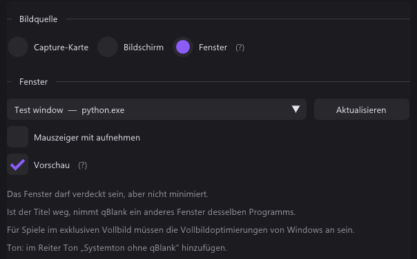
Wann ein neues Bild geholt wird
- OBS holt den Desktop in seinem Takt. Mit DXGI fragt es Windows einmal pro Takt, ohne zu warten. Mit WGC reicht Windows jedes Bild herüber, und OBS zeichnet im Takt das neueste. So oder so kann ein Bild bis zu einem Intervall der Leinwand warten.
- qBlank nimmt jedes Bild, wenn Windows es übergibt, und zeichnet es sofort.
- Gemessen von der Ankunft in qBlank, bis es qBlank verlässt: 0,7 bis 1,0 ms für ein Fenster, 2,0 bis 2,2 ms für den Bildschirm.
Bildrate
- OBS nimmt in der Rate der Leinwand auf, für jede Quelle dieselbe. Der Ganzzahl-FPS-Wert reicht bis 120. Ein 144-Hz-Monitor braucht den Bruch-FPS-Wert.
- qBlank zeigt jedes neue Bild. Aufnahme → Bildrate auf wie die Quelle behält alle, oder deckelt sie. Karte, Bildschirm und Fenster merken sich je ihre eigene Einstellung.
Vorschau und Verbergen
- OBS: Vorschau deaktivieren im Menü der Vorschau spart das Zeichnen. OBS-Fenster vor Bildschirmaufnahmen verbergen unter Einstellungen → Allgemein hält sie aus anderen Aufnahmen heraus; Projektoren bleiben sichtbar.
- qBlank: Vorschau aus zeigt eine kleine Anzeige mit Auflösung, Bildrate und Aufnahmezeit und zeichnet seltener. qBlank auf der Aufnahme verbergen ist beim Bildschirm ab Werk an. Es hält qBlank aus jeder Bildschirmaufnahme heraus, auch aus Remote Play und Remotedesktop.
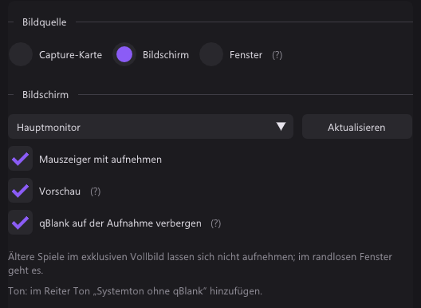
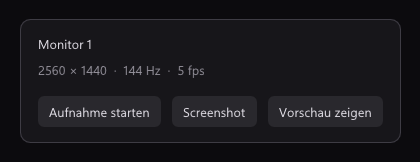
HDR
Beide nehmen einen HDR-Desktop in HDR. OBS braucht dafür unter Einstellungen → Erweitert einen Rec.-2100-Farbraum und ein 10-Bit-Format; SDR erzwingen an einer Fensterquelle schaltet es ab. qBlank folgt dem Monitor von selbst. Auf einem normalen Schirm bleibt das Weiß des Desktops weiß, Helleres wird abgeschnitten.
Ton
- OBS: Audioausgabeaufnahme für das ganze System und Anwendungsaudioaufnahme (Beta) für ein einzelnes Programm.
- qBlank: Systemton ohne qBlank nimmt alles außer qBlanks eigener Wiedergabe. Ein einzelnes Programm lässt sich nicht wählen.
Aufnahme und Replay
Beide
- H.264, H.265 und AV1 über NVENC, Quick Sync und AMF; x264 und SVT-AV1 in Software.
- 4:4:4, 10 Bit und HDR. Verlustfrei mit NVENC oder UT Video.
- Mehrere NVENC-Chips an einem H.265- oder AV1-Strom: Alle Encoder-Chips in qBlank, Split Encode in OBS.
- Ein Replay-Puffer, per Taste als Clip gespeichert.
- Aufnahme pausieren.
Wo sie sich unterscheiden
| qBlank | OBS Studio | |
|---|---|---|
| Container | MKV, MP4; AVI für verlustfrei | MKV, MP4, MOV, FLV, TS, HLS, hybrides und fragmentiertes MP4 und MOV |
| Ab Werk | MKV | Hybrides MP4 |
| Übersteht einen Absturz | MKV | MKV, hybrides und fragmentiertes MP4 und MOV, TS |
| Weitere Software-Encoder | x265 | AOM AV1 |
| Bildrate | Die der Quelle, oder gedeckelt, pro Quelle | Die Rate der Leinwand |
| Auflösung | Die der Quelle, oder stufenweise kleiner bis 360p, gleiche Form | Ausgabeauflösung mit Skalierungsfilter |
| Replay | Arbeitsspeicher oder Platte, 5 s bis 30 min | Arbeitsspeicher; ab Werk 20 s und 512 MB |
| Replay während einer Aufnahme | Wird gespeichert, auch in der Pause; beide teilen einen Encoder | Wird gespeichert; nicht, solange die Aufnahme pausiert |
| Marker | MKV, MP4 und Clips | Nur hybrides MP4 und MOV |
| Dateien teilen | Bei einer Größe, nahtlos | Nach Zeit, Größe oder von Hand |
| Tonquellen | Karte, Eingänge, Ausgänge, System ohne qBlank; Verstärkung bis +12 dB | Jede Quelle, mit Filtern wie Rauschunterdrückung |
| Spuren | Gemischt, getrennt oder beides | Bis zu sechs, pro Quelle gewählt |
| Ton-Codec | AAC mit 96 bis 320 kbit/s; PCM in AVI | AAC, Opus und mehr |
qBlanks Marker: Strg+Umschalt+F9 setzt einen, Player zeigen sie als Kapitel.
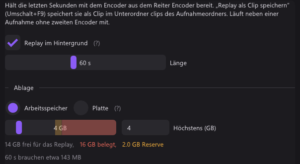
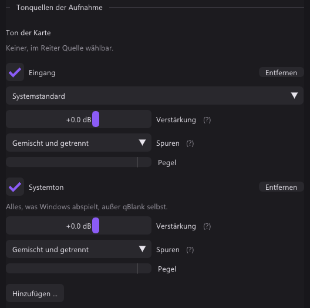
Screenshots und virtuelle Kamera
| qBlank | OBS Studio | |
|---|---|---|
| Screenshot-Formate | PNG, JPEG, JPEG XR, AVIF | PNG; JPEG XR für HDR |
| Screenshot-Größe | Die der Quelle, oder das fertige Fenster | Die Leinwand, oder eine Quelle |
| In die Zwischenablage | Strg+F10 | – |
| Kamera-Formate | NV12; P010 mit PQ für HDR | NV12, I420, YUY2 |
| Kamerabild | qBlanks Bild, in der Rate der Quelle | Programm, Vorschau, eine Szene oder eine Quelle, in der Rate der Leinwand |
| Programme, die sie sehen | 64 Bit | 64 Bit, 32 Bit, ARM64 |
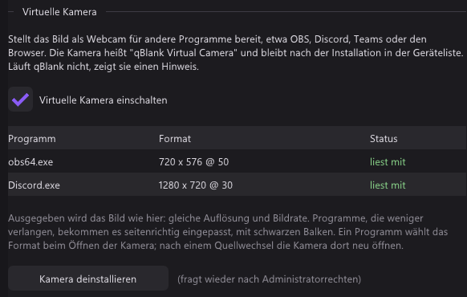
Tasten
- OBS: Hotkeys wirken, während ein Spiel die Tastatur hat. OBS liest die Tasten mit, das Spiel sieht sie also auch.
- qBlank: jede Aktion hat eine Taste fürs qBlank-Fenster und kann unter Systemweit eine zweite haben. Solange qBlank läuft, bekommt kein anderes Programm diese Kombination. Ist sie schon vergeben, steht sie rot da.
- Bei beiden lässt sich jede Taste ändern.
Nur in OBS
- Szenen, geschichtete Quellen, Overlays, Text, Übergänge, Studio-Modus.
- Mehrere Quellen zugleich, etwa eine Kamera über dem Spiel.
- Streamen zu Twitch, YouTube und anderen.
- Spielaufnahme für Spiele im exklusiven Vollbild.
- Ton eines einzelnen Programms.
- Audio- und Videofilter pro Quelle.
- Nach Zeit oder von Hand teilen, mehr Container.
- Eine virtuelle Kamera auch für 32-Bit- und ARM64-Programme.
- Plugins und Skripte.
- macOS und Linux.
Szenen, Streamen und Plugins bekommt qBlank nicht.
Nur in qBlank
- Jedes Bild gezeichnet, wenn es ankommt, in der Rate der Quelle. F1 zeigt qBlanks eigene Zeit.
- Ton der Karte mit eigenem kleinem Puffer, Exclusive Mode und A/V-Versatz.
- Videonorm, Interlacing, Halbbildreihenfolge und Farbbereich aus dem Bild gemessen.
- Composite-Filter mit Vergleich nebeneinander.
- Das Pixelraster der Konsole, Sharp Bilinear, Zeilenlücken und eine Röhrenmaske.
- Replay auf der Platte, bis 30 Minuten; Clips, während die Aufnahme pausiert.
- Marker in MKV und MP4 und in Clips.
- x265. Screenshots als JPEG und AVIF oder in die Zwischenablage.
- Eine virtuelle Kamera mit HDR.
- Systemweite Tasten, die das Spiel nicht sieht.
- Eine Datei von etwa 3 MB.
Beide zusammen
Eine Karte bedient immer nur ein Programm. Also hält qBlank sie und reicht das Bild an OBS weiter:
- In qBlank: Aufnahme → Virtuelle Kamera → Kamera installieren, dann die Kamera einschalten.
- In OBS: ein Videoaufnahmegerät hinzufügen und qBlank Virtual Camera wählen.
Gespielt wird mit qBlanks Latenz, und der Stream bekommt qBlanks Bild: deinterlaced, Norm gefunden, Dot Crawl entfernt. Für den Ton in OBS zusätzlich die Karte als Audioquelle oder eine Audioausgabeaufnahme hinzufügen.